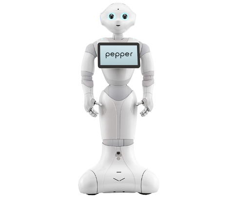

Nushura Islam (Nush)
About me:
I am from Dhaka, Bangladesh. I completed my education from an English medium school called Scholastica. During grade 12 I moved to Australia in 2019, for my foundation studies at RMIT University which I recently completed. I can speak 3 languages, Bangla (native language). English and Hindi. My hobbies are playing badminton, art and dance, which I am really passionate about.
Interest in IT
Jobs in IT are in high demand worldwide at the moment. Currently I am somewhat unfamiliar with all the different aspects of the IT industry. The more I am introduced to different concepts in the field, I am becoming more and more intrigued by it. When I was in high school, I often used to get worried when I was considering what field I should pursue my higher education in. Until I started to think about studying IT and I became more intrigued by the computing world. After discussing my options with my family members, I came to the conclusion I should study IT. My siblings where the most influential people in my decision-making process as they helped me understand what was best for me.
There are many students who dreams of attending certain universities and in the same way I have dreamt of attending RMIT. RMIT is a reputational institution and is renowned for its excellence in education. RMIT also provides a lot of hands on experience that is directly applicable to real world scenarios and allows you network with many different people. Throughout my studies I want to gain knowledge which I can implement in my future career. Secondly, I expect to gain hands-on experience. Lastly, I want to build my people skills so that it can enhance my communication skill. This is possible by different group assignments. In addition to that, this is what many firms look for while hiring their employees.
Muzzammil Nainar (Muzzy)
About me:
I was born in Perth, Western Australia and relocated to Melbourne in 2010 where I completed my schooling. I graduated from VCE in 2019. I enrolled at Latrobe university at the start of 2020 where I completed my first semester of University but recently transferred to RMIT to continue my studies. My hobbies include exercising, learning programming languages and Gaming, I recently built my first gaming pc that has been occupying to much of time recently.
Interest in IT:
Since my youth, I have always been interested in the intricacy and details behind computers and how they operate. The mysteries behind how computers were able to interact and communicate with each other, the concept of Wireless internet and various software and programs that made our daily lives easier had fascinated me, which all contributed to my growing passion to one day be able to learn about and create my own programs that would benefit society.
Out of all the different universities that fell within my current qualifications, RMIT stood out as it best represented a place where I can establish an identity, develop my abilities and achieve the skills and knowledge required to enter the IT industry.
As I progress through my course, I hope to learn the details behind the operation of computers, the various programming languages used in the development of the programs and software that make our lives easier, the ability to create and manage my own websites and servers, understand the importance of collaborations and teamwork during projects. Ultimately, being able to graduate with the skills and qualifications needed to enter the workforce.
Jack Archer (Archer)
About me:
I am from Dhaka, Bangladesh. I completed my education from an English medium school called Scholastica. During grade 12 I moved to Australia in 2019, for my foundation studies at RMIT University which I recently completed. I can speak 3 languages, Bangla (native language). English and Hindi. My hobbies are playing badminton, art and dance, which I am really passionate about.
Interest in IT
Jobs in IT are in high demand worldwide at the moment. Currently I am somewhat unfamiliar with all the different aspects of the IT industry. The more I am introduced to different concepts in the field, I am becoming more and more intrigued by it. When I was in high school, I often used to get worried when I was considering what field I should pursue my higher education in. Until I started to think about studying IT and I became more intrigued by the computing world. After discussing my options with my family members, I came to the conclusion I should study IT. My siblings where the most influential people in my decision-making process as they helped me understand what was best for me.
There are many students who dreams of attending certain universities and in the same way I have dreamt of attending RMIT. RMIT is a reputational institution and is renowned for its excellence in education. RMIT also provides a lot of hands on experience that is directly applicable to real world scenarios and allows you network with many different people. Throughout my studies I want to gain knowledge which I can implement in my future career. Secondly, I expect to gain hands-on experience. Lastly, I want to build my people skills so that it can enhance my communication skill. This is possible by different group assignments. In addition to that, this is what many firms look for while hiring their employees.
Yi Da Dai (Eric)
About me:
Hi, my name is Yi Da Dai or you can call me Eric if my Chinese name is too confusing to read. I come from Shanghai, China which I am currently living due to Covid-19. Yet I have been studying in Australia since year 8. For me it was an extremely valuable and memorable experience.
My main interest: Generally, IT YES! :) and lots of smaller hobby that correspond to IT such as building computers, CNC machining Etc.
My other interest: I love playing basketball, playing games and listen to different varieties of music. I am currently really into some Rock Artists/Bands like Pink Floyd, King Crimson and David Bowie.
My Interest In IT:
It all started from when I was in my Childhood, my dad used to guide me with his old chunky laptop and showed me cs1.6. At that time, I was blown away by such Magic and wondered how everything works. As time progress I have seen how technology innovates and how much of a bright future that IT can bring us.
My main interest in IT is about how data interact with each other and how we can manage them efficiently and functionally. I'm also interested in networking overall. I
Anthony
About Me:
I started studying an Associate Degree in Mechanical Engineering at RMIT in 2012 after graduating high school. After two years of study I managed to confirm that I immensely dislike Mechanical Engineering. So, I decided to double down and start another Associate degree in Civil Engineering. After another two years of study I graduated with two Associate Degrees and had confirmed that Engineering may not be the sort of thing I enjoy.
After graduating I lived abroad in Asia, Europe and most recently, North America, where I was working in the Canadian Rockies at a backcountry lodge, taking people on hiking tours in summer and cross-country skiing in winter. When the Covid-19 pandemic hit, I decided to return to Australia when the company I was working for was forced to close its doors and could no longer sponsor my visa.
Interest In IT
When I was living in Hanoi, working as an English teacher was where my interest in IT was first sparked. The community of expats in my area were a mix of different professionals, and a small group of them worked in IT; Programmers, Web developers, and other consultants who all had the ability to work remotely and travel to different parts of the world. Seeing the freedom their roles allowed them was very intriguing and I began to consider the possibility of a future in IT.
When I had to relocate back to Melbourne this year, a friend suggested that I apply for an entry level job at their Telcom company, Aussie Broadband. Despite having very little knowledge and no experience in the industry I got a Customer service Sales position. Shortly after starting I was transitioned to working remotely in response to the growing COVID-19 restrictions. Working from home reminded me of the expats in Hanoi, some of who have continued living abroad throughout the pandemic and have managed to maintain stability in their jobs.
Even though my experience of working remotely is from a desk in my flat and not Hanoi, it has me considering a career in IT and how I could expand my role within Aussie Broadband, or even shape a future career around the lifestyle I enjoy, that is challenging, interesting and secure.
Renelo Zammit (Nilo)
About me:
I was born and raised in Melbourne, but however my ethnicity consists of 50% Maltese and 50% Filipino, as my parents from both countries migrated to Australia before I was born. I graduated from high school in Melbourne’s Western suburbs last year, while hoping that I would make it into the Bachelor of Information Technology at RMIT. Some of my hobbies include exercising, hanging out with friends, playing video games, jamming out to music, mucking around with my kitten, and, of course technology! I used to be really into the whole world of video games, but then I realised that I became addicted to them too easily, so I decided to cut them out of my life – except for one… Counter Strike!! – (which I have way too many hours on it is embarrassing). I chose to study at RMIT because of many, many reasons. First being its good reputation for subjects in the arts, science, and technology industries, as from what I have heard from friends, family, news sources, and career advisors. Secondly would have to be my huge hobby/interest in IT and technology! I have absolutely loved technology since I was about 5 or 6 (from what I can remember) when my parents bought me a toy laptop.
Oh, and not to mention I am a dude (as some people may say that I have a feminine name lmao)
Interest in IT
Well, as I briefly stated in my ‘ABOUT ME’ section, my interest in technology and IT started when I was around 5 or 6, when my parents got me a toy laptop for my birthday. I was hooked into the world of technology and IT ever since. When I was a kid, I just had a really big interest with IT software and hardware – like for example, how they work, and how they’re made. My family got their first desktop PC when I was around 10 (I think), and I can definitely say that I was on that thing pretty much every day playing the pre-installed Windows XP games (solitaire, Space Pinball, minesweeper, etc.), as we had no internet connect at the time.
Throughout my whole high school life I knew that I wanted to peruse my future in the world/industry of IT. I would choose every IT-related subject elective in which was available at school over the science/maths/artsy type subjects as technology just fascinated me; but however, I never really knew which specific field of IT I wanted to go into was – whether it be software, hardware, security, engineering, etc, but I feel as if I know have some sort of idea; cybersecurity!
Really only up until this year, 2020, was when I finally researched the different fields within the IT industry, and I can say that cybersecurity really stood out to me. There’s just something about helping the community be safe on the internet that brings a little joy to myself; especially, because nowadays crimes over computers and the internet is rising as more and more people are starting to use digital technology for personal and private things, such as transferring money, completing tax returns, shopping online, etc. I also believe that people need to be more educated about the risks of handing out their personal information via the web, as criminals can commit some very serious offenses when they obtain people’s personal info.
Our Group members' Idea Job
&
What we Found
| Name | Ideal Job name | Ideal Hrs Per Week | Location | Skills & Experience Needed | Existing Skills | Possible Experience Needed | Possible Skills Required | Qualifications | Job growth |
|---|---|---|---|---|---|---|---|---|---|
| Muzzammil Nainar | C++ Game Developer/Programmer | 45 – 50 | Victoria(Preferably) | UnitC++, Python, JAVA, Graphic design | Experience in Python, HTML and CSS.Basic understanding of JAVA | Work & industry experience | Multiple languages & Unity | Degree, certificate or diploma | 9.2% |
| Anthony | Full Stack Developer | 30-40 | Remote | HTML, CSS, SQL, C#, PHP, Python | Experience in, basically nothing | 2 to 4 years of Industry experience | Multiple language competencies, Good interpersonal skills | Bachelor's Degree | 23.4% |
| Jack Archer | Game Programmer | 45-50 | Australia | C++, Unity, SQL, Java, C#, etc | Experience in VBasic | Work & industry experience | Multiple languages & Unity | Degree, certificate or diploma | 9.2% |
| Yi Da Dai(Eric) | Data Engineer | 《50 | Prefer China or AU | Python/Pyspark, SQL, Hadoop, Scala, R | Experience of HTML, CSS, SQLite, Adobe Pr(A little bit) | A strong academic background has commercial exposure of similar job. | Building complex data models by customer requirements. | Master/ PhD Data science | 21% |
| Renelo Zammit | Cyber Security Analyst | ~40hrs | ≤30min drive from home | 1-5 years of on-the-job experience in a related role (such as a systems administrator) | I already have a good understanding of how scams work and go down | Work experience in a business (of at least one year) | Working with clients | Bachelor’s Degree | 18.3% |
| Nushura Islam | software developer | 40-50 | Sydney/ Melbourne | Google Firebase, Python, rest API, Flutter | Experience of Java, HTML. | Knowledge of a variety of coding languages. | Experience in various programming languages, e.g java, C++ | Bachelor’s Degree | 23.4% |
All professions require work or industry experience in some capacity. Development jobs require more skills in programming languages, whereas Cyber Security involves working with clients. Nearly all jobs require at least a bachelor’s degree, however data engineering requires further tertiary study into a masters or doctorate. The job growth for cyber security, data engineer, full stack development and software development have roughly 20% job growth, whereas game development has around 9%. (SEEK Career Advice, 2020)
--------------------------------
Industry Data
Job Titles:
C++ Game developer/Programmer
Game programmer/graphic designer
Full Stack developer
Data Engineer
Cyber Security Analyst
Software developer
IT Specific Skills:
JAVA, JavaScript, Python, C#, SQL, PHP, HTML & CSS,
General Skills:
Communication, Problem Solving, Teamwork, Decision making, Analytical reasoning
IT Job Ranking in terms of demand 2017 – 2018, as gathered by Burning Glass:
1. Graphic Designer with a whopping total of 887 active selections
2. Full Stack developer with a total of 344 active selections
3. Software developer coming in close with 337
4. Data Engineer with 182
5. Cyber security analysts – 173
6. C++ Developer – 44
However, by early 2019 to 2020, as technology developed, specific job demands also changed:
1. Cyber security positions took the lead, due to the growing need of security for consumers and clients interconnected within the IOT (Internet of Things)
2. Data engineer jobs are also in demand in Australia, as of recently due to the current pandemic, they have been a spike overall for IT jobs in the industry, and the need for engineers have increased.
3. Full stack development, as many companies are straying away from specific “front end or back end” (McKinley,2019) positions, and now require individuals that can perform at all levels of application stacks.
4. Software Developer, More and more businesses require the help of software developers to create specialised programs and software both for mobile, web and other purposes, which assists in maintaining their competitive edge in the market. This proves to be true as currently in Australia there are more then 5000 wanted job listings on Seek.
5. Game developer/Graphic designer jobs are also rising, with a total of 1072 job listings on Seek (Seek,2020), posted within the past couple months. This is a result of the growing popularity of esports and technology such as AR and VR. The total income generated from game development studios within the past year, comes to a total of $143.5 million alone.
Skill Ranking in terms of demand, 2017 to 2018:
The following were gathered from Burning glass progress report:
IT Specific:
1. SQL – 3,570 active selections
2. JAVA – 2,860
3. Graphic Design – 2,068
4. C #- 1,643
5. Python – 1, 1 50
General Skills:
1. Teamwork/collaboration – 14,364
2. Creativity – 7,475
3. Leadership – 5,144
4. Analytical skills – 2,997
5. Decision Making – 1,850
However according to more recent research, these values have changed:
IT Specific:
1. JavaScript - With up to 71% employment rate
2. JAVA – 57%
3. C# - 53%
4. Python – 51%
5. PHP – 40%
6. SQL – 20%
General Skills:
1. Creativity
2. Leadership
3. Teamwork
4. Analytical Reasoning
5. Decision making
As shown above, the skills have changed quite a bit in ranking in terms of demand over the years, while skills such as JAVA remain constant over the years, general skills such as creativity which was lacking in demand few years ago, is know one of the highest-ranking skills in the industry.
Highest ranked IT skills not in current skill set:
1. Cloud engineering skills
2. Robotic and process automation specialists
3. Experience in React.js
Highest ranked General skills not in current skill set:
1. Adaptability
2. Empathy
3. Resilience
Opinion about Ideal Job
Jack
My opinion of my ideal job has not changed because based on the data, the game industry is growing and the skills required are something I am currently learning or something I am planning on learning in the near future. Java, C# and C++ are skills I am learning and intent on learning and the data suggests that game design and development is a growing field with the advancement in Augmented Reality and Virtual Reality technologies as well as the increase in popularity of eSports and gaming in general.
Renelo
After taking a look at the Burning Glass data in terms of the IT field of cybersecurity, my opinions on the career bracket of the cybersecurity world hasn't really changed a bit. Even though cybersecurity ranked second-to-last on the 'IT Job Ranking in terms of demand' from 2017-2018, I feel like its ranking score of 173 is only going to increase in the future. In conclusion, I believe that looking at the Burning Glass data is only really a good indicator of how a specific job is doing at the moment, rather than taking the long-term into account.
Nush
Previously my ideal job was software developer and after looking at the Burning glass data, I would still like to stick with this job as there will be demand for this job even in the near future. I would also like to acquire skills about robotic and automation as I am newly finding interest on that subject. Thus, my ideal job is still software developer but having the skills about robotics and automation will further help build up my career as robots will be present in our daily life soon in the future.
Eric
Anthony
None of the data available on burning glass put me off becoming a full stack developer but it also didn’t encourage the idea. It did reinforce that this job will offer secure employment going into the future and It would be able to help me have the lifestyle that I am seeking long term. The information also gave me a little more perspective on the skills that I would need to gain to get into this role. However, when browsing all the industry data available. It did give me a broader perspective on the outlook of the industry of a whole and made me realize there are a variety of roles out there that would be secure going to into the future, and afford me challenging work that I could do remotely.
Muzzammil
After my research of the Burning Glass data, my opinion of my ideal job to be a C++ game developer remains resolute, as according to the figure's jobs related to Java and C++ and other developer related languages remain stagnant over the years and only continue to improve as technology progresses.
--------------------------------
IT Work
IT WORK Questions:
1. Please tell us about your IT work. What exactly do you do?
My job title is IT support Engineer, Primarily I do first and second line IT support work. Its a lot of break fix sort of stuff. If somebody can’t log into there laptop because of a password issue they will call me or my team. I also do a lot of User Administration when we have somebody new starting at the company, I will set up all of there IT accounts and set up their laptop for them. That use to be done in person now I will mail them out a laptop and everything will be done remotely. Mostly I fix problems as they come up I also do a bit of project work as well.
2. Please tell us about the industry you work in.
I work in the financial industry, for a Superfund.
3. What other kinds of work do you have to do?
Along with the support work I do, I do a bit of ad hoc project work occasionally and help the infrastructure team. Right now, I doing a project building new line for the service desk currently I we use AWS which is quite expensive. But we pay for Zoom for our video chat now I’m seeing if we can use Zoom Phone as an alternative for the IT desk line.
4. Who are all the different people you interact with in your work? Please tell us about them.
Being first line support, I am the first contact for anybody who has a service request or incident. I interact with everybody in the business. That could be anybody from any department. It could be a call centre worker all the way up to the CEO I also deal with external vendors quite often
To take it back to the project I mentioned before I have been talking to zoom about the capability of there product and if it fits out use case. That’s a very broad answer but its support for the business so that could really be anybody in the business be that externally on internally. Crucially I don’t have to speak to customers, the super companies’ members.
5. Please tell us about your interactions with other IT professionals.
Being the first point of contact regardless of how a ticket comes through. It will go to myself or another person in my role. Will pass on these requests to another IT professional. I regular speak to the infrastructure team who work very closely with us. But to a lesser extent I speak to developers and solutions architects in other parts of the business who are doing their own thing.
6. What about your interactions with clients or investors?
I don’t have to speak to with any superfund members or investors in my role.
7. What aspects of your work do you spend most time on? Please tell us about these.
What I spend the most time does vary a bit. Generally, I would say most of my work consist of dealing with Service requests and incidents. Service request being I want access to something, or I want a new piece of hardware. Incident being, something a staff member has it broken, be it a monitor or laptop whatever.
Most of my day I will be logged into the phones and I will also get email contacts. We also have an IT support portal where people log their incidents and requests into.
8. Which aspects of your work do you find most challenging?
I need to have a very broad knowledge base. Quite often people will approach me with a question about an application that I have never heard of. When this happens, I first need to check the documentation we have on the application. Around half of the time I find we don’t have the documentation we need. When there is no documentation, I start by asking my team if they heard of the application then I have to start reach out to a lot of different people across different parts of the business.
Probably the most channelling part is lack of information, when I need to know a lot about a lot of different stuff.
9. Finally, can you share an example of the work you do that best captures the essence of the IT industry?
This is going to sound like a response you would give in a job interview. But I feel like the essence of the IT industry Is facilitating businesses allowing them to do what they better. I can give you some examples of how this works into my job.
If somebody is locked out of there computer, they can’t do their job. By me or one of my team members being available to unlock their computer they can do the job they are being paid to do.
Another example if we handed a developer with a laptop with 4gb of ram. They wouldn’t have the tools they needed to do their job. My job is to facilitate the most reasonable accommodation. A laptop with 4gb of ram is just an example, we don’t have those. But everybody always wants the best available technology to work with. But that’s very expensive and you need to cut a line between what people want and what can be provided.
Hence our team selected four technologies that we think will impact the world the most，and here is what we found:

ROBOTS
by Nushura Islam

MACHINE LEARNING
by Yi Da Dai

CYBERSECURITY
by Renelo Zammit

AUTONOMOUS VEHICLES
by Jack Archer
ROBOTS
State of Art and the Future
As days are progressing robots are becoming increasingly popular. There are few latest technologies using in robotics. Some of them are ‘Google’s worker robots’, ‘Asus Zenbo’ and ‘Pepper’. ‘Google’s worker robots’ is a robot with different kind of personas stored or can also be installed inside. Moreover, its characteristics changes depending on the people around. (7 Latest Innovations in Robotics, 2020).
1. ‘Asus Zenbo’ has won awards for its amazing capabilities. (ASUS Zenbo - Your Smart Little Companion, 2018). It is a small devise and can move around automatically, can hear and act accordingly depending on the instructions given. One amazing feature on Zenbo is that it can identify emergency situations. In addition to that it acts as a reminder for different types of daily activities. (7 Latest Innovations in Robotics, 2020).
Lastly, ‘Pepper’ is another type of robot that analyzes its surroundings and tones of people’s voice and acts in relation to what the people around is feelings like. For example, if people around are sad then it will be sad too. (7 Latest Innovations in Robotics, 2020).
Nowadays robots are being used in so many aspects of life that is beyond imagination. Robots can almost do all the things humans can carry out. In addition to that, they can be even better than humans. Robots can do tasks in a more efficient manner with more accuracy when compared to humans. (7 Latest Innovations in Robotics, 2020). However, there will always be certain things which can never be done by replacing humans like for instance robots needs to be fixed, updated, or even be destroyed and these tasks require human assistance.
As times are progressing, robots will be replacing humans in many aspects. Robots will be taking over their jobs. Those jobs include, telemarketing, shipping services, tax preparers, photograph processing, data entry work etc. (WIRED, W. , 2020) . In the telemarketing sector, pcs will be designed in such a way so that it can do automated telephones, accumulate dues and furthermore, investigate about other issues. Shipping facilities will also be computerized, and robots will be brought as it would be more cost effective for those shipping companies. This is because then they would not need to pay those workers who were working before and instead invest on efficient systems. No human labor would then be necessary and thus, making people working at that sector jobless.
Tax consultants would no longer be needed as online platforms are being made available which would save clients time (WIRED, W. , 2020) .This would further be cost effective because without it clients would have to go to those tax professionals but now it can be done through online. Photograph processing has already been computerized and is available to individuals which they can easily do by the help of programmed software (WIRED, W. , 2020). This made those people job less who took it as profession. However, there are still many professional photographers who still has their jobs. Lastly, data entry workers will be jobless in the upcoming times as those workers will be swapped by advanced software systems, kits or even automatons.
The advancement on the sectors of Artificial Intelligence (AI) and Machine learning is required for robots to become handier and more involved in the day to day life. However, there will be jobs which requires human as well and those jobs should always be separate. For instance, a robot should never be allowed to carry out a surgery on a human being. Thus, both robots and humans need to learn how to work together by differentiating their individual categories (5 ways to help robots work together with people, 2018). Robots needs to be programmed in such a way that it has a shared knowledge between its human co-workers. If both robots and humans work together then they need to converse successfully and understands each other’s behavior as well. So, robots are needed for works which can be done in a more efficient manner. Hence, huge improvements on AI and Machine learning is needed to make that happen.
Likely Impact
• There are potential impacts based on the developments of Artificial intelligence where the impacts are both negative and optimistic. As mentioned above, AI can be responsible for unemployment of many workers through robots. (What Is The Impact Of Artificial Intelligence (AI) On Society? ,2020)
• Autonomous vehicles are being made which possess a threat to the people, both using the vehicle and the people around the moving car. So, AI may cause harm to the society as it can cause an accident. In this kind of situation no one can be blamed or be responsible for the harm caused in real terms. (What Is The Impact Of Artificial Intelligence (AI) On Society? ,2020)
• AI can cause harm to our data confidentiality as our data is collected daily. So, people with higher power, like the government, can gain access to those data’s and use those to come into conclusions about certain choices. (What Is The Impact Of Artificial Intelligence (AI) On Society? ,2020)
• AI can result in cost effective treatments. Thus, influencing the health care sector in a positive way. (What Is The Impact Of Artificial Intelligence (AI) On Society? ,2020)
• Furthermore, AI can also come handy in cracking crime. (What Is The Impact Of Artificial Intelligence (AI) On Society? ,2020)
The thing which is likely to change is the way people carry out everyday activities. People will need to normalize the use of AI and robots around them. Robots can be viewed as a type of a threat now or people may even be intimidated by its presence around them but soon robots will be more involved. So, taking them and involving them in our lives is the best option as it can making life easier in different possible ways. Individuals may see robots in a negative way as it will be replacing many jobs soon and some might even be negatively affected by it. Though AI is somewhat responsible for this, but it is creating many job opportunities as well. According to one of the articles in Forbes, AI will be producing 58 Million fresh positions by 2022. Hence, AI will make current jobs redundant, but it will also be creating jobs. So, there will be a balance between the two.
Likely Impact on Me
The improvement and the presence of AI in our life will have impacts. For my daily life, it would be nice to have a robot to prepare a meal for me. That would save me a lot of time as I spend an amount of time every day on cooking. All of us spend some time cleaning our house as well but there are already robot vacuum cleaners available in the market today. So, this can save time as by having that in house, we do not need to clean the floors and the robots can do it for us. However, these cannot clean everything because it is for floors only. So, something more advanced would be furthermore helpful in terms of cleaning our houses. In the near future, if I have to work with robot as co-workers then it would be an amazing experience and I will get to learn a lot in terms of how both robots and humans can co-exist and work together. Furthermore, if most of the time a robot is around me, like my phone, to notify me about certain tasks and even talk to me like a normal human being then it would be helpful. In addition to that, it would feel like someone is always with me.
As I come from a developing country, those kind of improvements in the use of technology will have huge impacts. If robots are there to do the cooking and cleaning, then it will take away the jobs of such people who works in houses. Even in general terms, there are a lot of jobs in developing countries which now require human effort but can be replaced by robots. So, on that sense unemployment rate would become high. However, if I specifically consider my family then they would have a positive impact on it as those kinds of improvement will help in their everyday life. If a robot like ‘Asus Zenbo’ is with an elder member of my family then my other family members and I can be a little bit relived as that robot can alert us in case of any emergencies and furthermore, that can even notify us or whoever is near, when it is time for their medicine or other related treatments. Hence, we can see robots can have both its pros and cons, so we must weight them and do what is the best in relation to different situations.
Cybersecurity
What does it do?
Cybersecurity is the protection of computer systems and networks from the theft of or damage to their hardware, software, or electronical data. Cybersecurity is a new and improving ‘IT technology’, which happens to be becoming more and more prevalent by the day. The reasoning as to why this is, is because of the fast-growing use of computer systems of sorts in corporations; as the use of IT systems is deemed to be more efficient, powerful, and more widely regarded these days. Cybersecurity is very important in the IT industry, as it allows for IT corporations and business to be protected and ‘worry-free’ from the various forms of cyber-attacks which are becoming more and more common day by day.
In terms of the current state of the new and upcoming cybersecurity sector, we can now employ people under the title of ‘cyber security analysts’, and get them to handle and deal with necessary breaches and attacks towards a company’s data, computer systems, or network. Nowadays, the role cyber security analysts play is a very important one, as without them thousands of huge corporations would be vulnerable and major targets to such digital attacks. As the world of cybersecurity in the IT industry is increasing and growing in demand and popularity, this has led to many job opportunities in this sector to be opening up and available. It is also important to note that currently, there is a need for more cyber security analysts to enter the workforce because of the increasing, constant and continual usage of computerized systems.
The future of the world of cybersecurity is looking bright. The reasoning as to this is because of the very high demand for IT workers to be entering and pursuing this career direction. Cyber security workers who currently work in organizations already play an important role in keeping such organization’s running. This is only the beginning of the whole cybersecurity industry as well. In the near future (say in the next three years or so), it will be normal for nearly all organizations (and not only IT organizations) to be having entire sectors/sections of their industry dedicated to the protection of their computer systems, network, and most importantly, their company’s data.
As of right now, in 2020, the biggest advancements in the world would have to be the technological advancements which are being achieved (and will continue to be being achieved for some time). There is no doubt that we are all dependent on IT and technology in some form or another, and this uprising trend will only continue to soar. Ultimately, you could say that the evolving and developing world of IT is what is leading the cybersecurity sector to eventually skyrocket. Another good point to note here is that the longer the cybersecurity is around, the more knowledge and information cyber security analysts will continue to learn and know abouts in regards to cyber-attacks; as in how they are done, and ultimately, how to deal with them when they occur the next time -- but then again, on the next page, we could say that with these advancements in the growth of current technologies, cyber-attacks would become more advanced, and eventually, harder to counter.
What is the likely impact?
I would say that cybersecurity is very likely to have a positive impact on society in the very near future. This is pretty much common sense, but having a sector of the IT industry who’s role is to protect the privacy, information, data, and much more of computer system users is a great technological characteristic these days, especially with today's current dependencies on the use of various IT systems.
The cybersecurity industry would be likely to adapt in the future when/if cyber-attackers and hackers develop new methods of committing their crimes over technology and the internet; but, it really just depends on if and how such attackers develop these new methods. Besides from waiting to see how attackers further develop their methodologies of their actions, it is safe to say that the new world of cybersecurity will continue on the same path of how it is going at the moment, but with an increase in the impact that it has on the IT world.
The vastly growing IT technology, cybersecurity will affect a wide population of people in the future. In a nutshell, it will basically affect workers who tend to work with computers frequently; they’ll have the peace of mind that their work and data is safe from intruders.
The emerging IT industry of cybersecurity would place many new job opportunities on the table, rather than replacing or making redundant any current jobs (fortunately!) This is because of the fact that many people wanting to pursue a career in the IT industry would be able to get a job in the cybersecurity department of IT because of how important, in-demand, and impactful it is on society.
How will this affect you?
With cybersecurity becoming a big part of IT at the moment, I know that in my daily life, I’ll have the peace of mind knowing that my personal data, personal information, and files will all be secure from cyber-attackers. I’ll always know that there’s many people out there who can assist in the file recovery, and/or can just give me advice on how to stay protected when it comes to computer systems and IT – whether this be online or offline.
With cybersecurity becoming a big part of the IT industry more and more, I’ll have to try and not to be too complacent in regards to my own safety and privacy with computers! I feel like I shouldn’t be too relaxed and ‘let the experts worry’ because this’ll just make me too dependent on cyber security analysts, which could ultimately, let ‘slip-ups’ happen, where I do become the victim of a cyber-attack whether it be major or not.
I would say that the majority of my friends and family wouldn’t really know about the current trend of the uprising of the cybersecurity world, so I guess it wouldn’t really affect them much at the moment. However, I believe that in the future, when cybersecurity becomes even more prevalent, then it would start to have a positive effect on them as their computer and internet activity would be more secure, leaving them to be less vulnerable to attacks and unwanted privacy breaches.
Our Project
Overview
The project will consist of creating a food control AI, that will monitor, and track food stored in the fridge and pantry. The application will be set up over the surface of the fridge and pantry door. It will analyze the food present inside and moreover; it can detect those foods which are close to their expiration date or foods which have gone rotten. In case where the food has gone rotten, it can send emergency alerts to the owners’ phone or other devises to remove those from the space. So, we can see it will be connected to the owner’s phones or other devices. Over time it adapts to the food choices and frequent buys. Then it automatically replenishes by contacting the nearest grocery and ordering the items. It is obvious that people might not want the same food or products again. That is why the fridge will send an alert or notification to the user’s phone stating the grocery list and from that list they can exclude items that they do not want and also has an option to add new stuff as well. So, when the user confirms the purchase, the application can automatically order from the grocery store about the list of items. If the consumer wants and has a favorite grocery store, then they can become a member, so that they can get their desired items. The AI is self-adaptive, and highly intelligent, it will be stored within the fridge and the pantry, equipped with a camera to monitor the stock.
Motivation
The objective of this project is to expand on current smart fridge technologies and further integrate their use into home automation systems and subscription services. It would aim to reduce food spoilage and wastage, help people manage calorie intake, and reduce the time an individual would need to spend shopping.
Reduce Food wastage:
Globally, a third of all fresh produce, such as fruits, dairy and meat, is lost to waste, costing the global economy approximately 990 billion dollars a year (Food and Agriculture organization of the United Nations, 2020). In Australia, 34% of total food waste is from households (ARCADIS, 2019), with the most common cause being produce spoiling when left too long in a fridge or freezer, followed by people not finishing meals (Surprising Facts about Food Waste, 2020).
The AI that would be introduced into a smart fridge would help minimize this wastage by ensuring the quantities of food being ordered are suitable for the number of members in any given household, as well as sending alerts whenever food was about to spoil.
Help people manage Caloric Intake
Currently, 67 percent of Australian adults are considered overweight or obese. (Department of Health | Overweight and Obesity, 2020). One of aims of the smart fridge AI is help people more effectively manage their daily intake, and therefore reduce overall obesity rates, by suggesting meal plans, and reducing people over-ordering on their weekly shop.
Reduce Shopping Time:
The average person will shop for food 1.6 times a week and spend approximately 43 minutes per shopping trip. Annually, that equates to around 56 hours. (Save time by becoming a smarter grocery shopper - ABC Life, 2020) If an individual shops every week of their life, between the ages of 18 and 75, that is 3100 hours (129 days) over their lifetime, which is an immense amount of time to be dedicated to a single task.
The smart fridge system would monitor food consumption, and order foods that are regularly eaten to be delivered to the home instead, which would greatly reduce the overall time people spent shopping for food each year, and this lost time could be spent more productively elsewhere.
Description
The food control AI (Artificial Intelligence) will consist of nested AI components within a powerful minicomputer. Included with this will be a mounted camera. The food control AI will be installed within the fridge and pantry and will use its equipped camera to monitor and record the products stored within. The images captured will be backed up daily to the cloud, where it can be accessed via an app that can be downloaded onto any personal device. This memory feature is vital to the AI’s learning and recognition, and it contributes to its self-adaptive trait. This also provides the individual with an overview of current food stock in their homes.
Over time, the food control AI will adapt to the individual’s buying habits, involving the most frequent replenished products, their highest quantity of specific products, and their most used items. This will allow for a feature that enables the AI to recognize when a specific product is about to finish, and automatically create a virtual shopping cart of the required products which will be recommended (through notifications to the owner) to be purchased. The individual then will have the option to do one-off setup of their preferred local grocery store, delivery details (address, etc.), and payment method. The food control AI will then automatically purchase the required goods based on the set options. This feature is completely optional and can be turned off at any time without any hassles, keeping the authority of control with the user. If the user feels uncomfortable with relying on an AI to automatically order groceries based of its self-learning, and neither has the time to manually tell the AI to order the items when required. There will be an option to set up a roster which consists of establishing a set day and time each week, that the AI will be allowed to order the required the products.
The individual will have full control of the food control AI from within the handy dandy app provided, which will contain the following features:
• Able to turn the food control AI on and off at any time
• Set backup timings for the images to be uploaded to the server, and the option to manually backup these images to the device local storage
• The ability to manage and delete all information captured by the machine
• The ability to setup “sleep times” where the AI will turn off all recording capabilities and proceed to hibernate for those certain time frames
All in all, the individual will have full admin access to all features of the program, thereby upholding their safety and security.
Tools + Tech
• Establishing a safe and secure cloud server
• Acquiring high processing powered computers with access to the internet
• Ensuring there is enough electricity to power up the system
• Acquiring computers with abundant RAM and storage
Skills
• individuals with knowledge and experience of programming languages; JAVA, C++, Python
• Knowledge and experience in AI algorithms and development
• Knowledge and experience in machine learning
• Able to work cooperatively in a team-based environment
• Experience in UI development
• Experience in graphic programming
• Any other related skills and knowledge in the IT field are gladly welcomed
Outcome
If this project is to be successful in the end, then the outcome will consist of happy families who will have this food control AI fridge and pantry installed into their kitchen spacing of their household. This project idea will ultimately solve the problem of many households and families wasting thousands, upon thousands of food/consumables every year. This development will have a big impact on society, as this will mean that less food and consumables will be wasted, leading to money being saved for families across Australia, and eventually the globe!
-----------------------------------------------------------------------------
Reference [Project Idea]
• Www1.health.gov.au. 2020. Department Of Health | Overweight And Obesity. [online] Available at: https://www1.health.gov.au/internet/main/publishing.nsf/Content/Overweight-and-Obesity#:~:text=In%202017%2D18%2C%20the%20Australian,63.4%25%20in%202014%2D15. [Accessed 19 September 2020].
• ARCADIS, 2019. National Food Waste Baseline. Final Assessment report -Executive summery. [online] pp.1- 8. Available at: https://www.environment.gov.au/system/files/pages/25e36a8c-3a9c-487c-a9cb-66ec15ba61d0/files/national-food-waste-baseline-executive-summary.pdf [Accessed 18 September 2020].
• Foodbank. 2020. Surprising Facts About Food Waste. [online] Available at: https://www.foodbank.org.au/food-waste-facts-in-australia/?state=vic [Accessed 18 September 2020].
• Department of Agriculture, Water and the Environment. 2020. Department Of Agriculture, Water And The Environment. [online] Available at: https://www.environment.gov.au/protection/waste-resource-recovery/national-waste-reports/national-waste-report-2018 [Accessed 18 September 2020].
• Food and Agriculture organisation of the United Nations, 2020. Global Initiative On Food Loss And Waste Reduction. [online] p.2. Available at: http://www.fao.org/3/a-i4068e.pdf [Accessed 18 September 2020].
• Shopper - ABC Life. [online] Available at: https://www.abc.net.au/life/how-to-save-time-grocery-shopping/10221458#:~:text=A%20US%20study%20found%20shoppers
Reference [ITT ROBOTS]
1. State of art:
Ecpi University n.d., 7 Latest Innovation in Robotics, viewed 12 September 2020, https://www.ecpi.edu/blog/7-latest-innovations-in-robotics> .
2. Zenbo:
Asus|Zenbo n.d., viewed 12 September 2020, https://zenbo.asus.com >.
3. Figure 1:
The Asus Zenbo. Digital Image. Techradar. 30 May 2016. https://www.techradar.com/news/world-of-tech/asus- arrives-in-your-home-with-the-zenbo-robot-1322424 > .
4. Figure 2:
Pepper. Digital Image. IEEE Spectrum. 5 July 2014 https://spectrum.ieee.org/automaton/robotics/home-robots/pepper-aldebaran-softbank-personal-robot > .
5. Future of robots:
Wired n.d., What jobs will robots take from humans in the future?, viewed 12 September 2020, https://www.wired.com/insights/2014/07/jobs-will-robots-take-humans-future/ > .
6. Future of robots with humans:
The conversation 28 November 2018, 5 ways to help robots work with people, viewed 13 September 2020, https://theconversation.com/5-ways-to-help-robots-work-together-with-people-101419 > .
7. Figure 3:
Robot working with human. Digital Image. Robots and humans, working together in harmony?. 12 June 2017. https://boingboing.net/2017/06/12/robots-and-humans-working-tog.html > .
8. Impact of AI on society:
Bernard Marr 2020, What is the Impact of Artificial Intelligence (AI) On Society?, viewed 13 September 2020, https://bernardmarr.com/default.asp?contentID=1828 > .
9. Figure 7:
Rate of Automation. Digital Image. Forbes. N.d. https://www.forbes.com/sites/amitchowdhry/2018/09/18/artificial-intelligence-to-create-58-million-new-jobs-by-2022-says-report/#237ede724d4b > .
Reference [Cybersecurity]
1. What is Cybersecurity? Everything You Need to Know (2020). Available at: https://searchsecurity.techtarget.com/definition/cybersecurity#:~:text=Cybersecurity%20is%20the%20protection%20of,centers%20and%20other%20computerized%20systems. (Accessed: 18 September 2020).
2. What is Cyber Security? (2020). Available at: https://www.kaspersky.com.au/resource-center/definitions/what-is-cyber-security (Accessed: 18 September 2020).
3. Computer security (2020). Available at: https://en.wikipedia.org/wiki/Computer_security (Accessed: 18 September 2020).
4. Services, P. (2020) What Is Cybersecurity?, Cisco. Available at: https://www.cisco.com/c/en_au/products/security/what-is-cybersecurity.html (Accessed: 18 September 2020).
5. What is Cybersecurity? (2018). Available at: https://www.forcepoint.com/cyber-edu/cybersecurity (Accessed: 18 September 2020).
6. Do you worry about cyber safety? Learn some smart defenses. (2020). Available at: https://us.norton.com/internetsecurity-malware-what-is-cybersecurity-what-you-need-to-know.html (Accessed: 18 September 2020).
7. What is Cyber Security? Definition, Best Practices & More (2020). Available at: https://digitalguardian.com/blog/what-cyber-security (Accessed: 18 September 2020).
8. Evolving threat landscape a concern for cybersecurity analysts (2020). Available at: https://www.technologydecisions.com.au/content/security/news/evolving-threat-landscape-a-concern-for-cybersecurity-analysts-635112401 (Accessed: 18 September 2020).